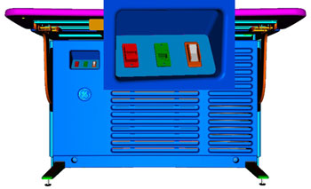
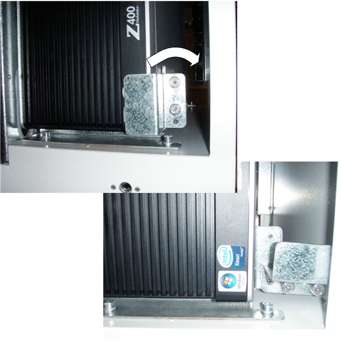
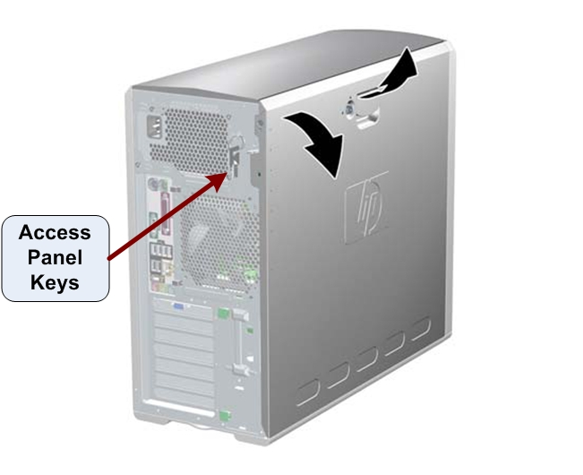
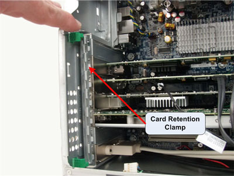
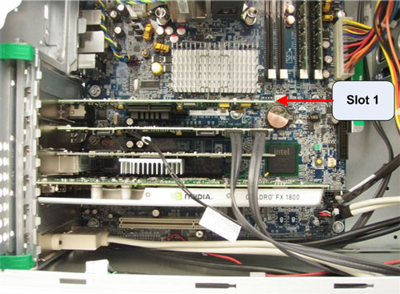
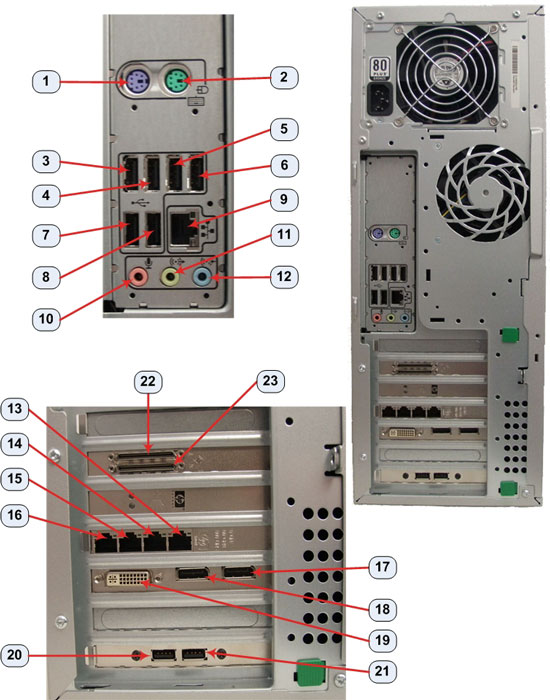
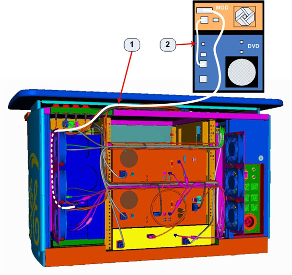
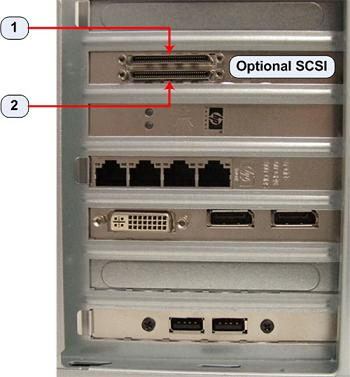
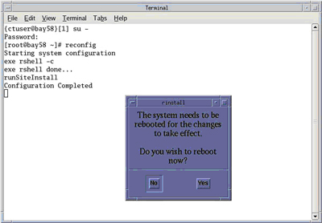

Operating Documentation
Direction 5193574-800, Rev# 22
LightSpeed 7.X Service Methods
Module Version 2.0, Version Date 8/16/10
Operating Documentation |
| Required Persons | Preliminary Reqs | Procedure | Finalization |
|---|---|---|---|
| 1 | Not Applicable | 60 mins | 45 mins |
This procedure describes and illustrates the steps necessary to install the MOD Archive Option along with SCSI Card into a GOC6.5 Operator Console
| Last Revised: | 16 June 2010 |
| NOTE: | Please review Section 3.5, Required Conditions, before proceeding with this option installation procedure. |
| Item | Qty | Effectivity | Part# | Manufacturer | |
|---|---|---|---|---|---|
| Standard FE Toolkit | 1 | - | - | - | |
| Item | Qty | Effectivity | Part# | Manufacturer |
|---|---|---|---|---|
| Tie Wraps | 10 | - | 46-208758P3 | - |
| ||||
| ELECTROCUTION HAZARD | ||||
| HIGH VOLTAGE PRESENT. | ||||
| USE PROPER LOCKOUT / TAGOUT PROCEDURES BEFORE REPLACING THE COMPONENTS. |
| ||||
| FINGER PINCH AND SHARP EDGES HAZARD | ||||
| DUE TO TIGHT CLEARENCES OF RACK MOUNTED COMPUTERS AND SHARP EDGES OF CHASSIS COMPONENTS, FINGER AND HAND INJURIES CAN OCCUR. | ||||
| Wear HAND PROTECTION GLOVES AND PAY ATTENTION to HAND AND FINGER LOcaTIONs AT ALL TIMES. |
| ||||
| POTENTIAL FOR INJURY TO SERVICE PERSONNEL. | ||||
| HOST COMPUTER CHASSIS CAN WEIGH IN EXCESS OF 30 POUNDS. | ||||
| DEPENDING ON YOUR HEIGHT AND ACCESS TO EQUIPMENT REMOVAL/INSTALLATION, LIFTING ASSISTANCE MAY BE REQUIRED. USE YOUR JUDGMENT TO DETERMINE IF LIFT ASSIST OR A SECOND PERSON MAY BE REQUIRED TO ASSIST IN REMOVAL AND INSTALLATION. |
| ||||
| TO PREVENT DAMAGE TO COMPONENTS WITHIN THE GOC6.5 CONSOLE, OBSERVE
THE FOLLOWING ESD PRECAUTIONS:· WEAR A STATIC STRAP TO ENSURE
THAT ANY ACCUMULATED ELECTROSTATIC CHARGE IS DISCHARGED FROM YOUR
BODY TO GROUND.· CREATE A COMMON GROUND FOR THE EQUIPMENT
YOU ARE WORKING ON BY CONNECTING THE STATIC-FREE MAT, STATIC STRAP
AND PERIPHERAL UNITS TO THAT PIECE OF EQUIPMENT. FOR FURTHER INFORMATION REGARDING ESD PROTECTION, REFER TO THE SAFETY CHAPTER IN THIS PUBLICATION | ||||
| ||||
| FOLLOW ALL REQUIRED SAFETY AND PPE PROCEDURES CUSTOMARY FOR YOUR ORGANIZATION WHEN WORKING ON THIS PRODUCT. | ||||
| Condition | Reference | Effectivity |
|---|---|---|
This option installation applies only to GOC6.5 Operator Console only. | - | - |
Only trained service personnel should service the GE CT Scanner. | - | - |
Select one of the following methods to power off the Operator Console:
If Applications are running, click on the [Shut Down] icon and select [Shutdown].
If Applications are down, open a Unix Shell using the Toolchest. Type:
{ctuser@hostname} halt[ENTER]
The Operator Console monitor will display a System Halted message when it is acceptable to power off the Operator Console.
Power OFF the Operator Console at the front panel switch (Illustration 1).
Illustration 1: Console Power Switch

Perform Lockout / Tagout as described in Safety - Equipment Service - Lockout / Tagout / PPE on the Safety menu of the service publication. For added protection, disconnect the Twist-N-Lock Main Power Cable from rear of console.
Move the console away from the wall to allow clear access around the console.
Remove console’s front and rear covers and set aside.
| NOTE: | Refer to Console Cover Removal and Installation procedure located on the Replacement > Console menu of the service publication for more details. |
Remove the console’s Keyboard Tabletop and set aside. This will allow better access to the console’s computer rack.
Remove the Host Computer from the GOC6.5 console.
Unplug the power cord to the rear of the Host Computer chassis.
Remove the cable connections to the HP Z400 Host Computer chassis.
| NOTE: | Verify that all cables are labeled and clearly marked. If necessary, add a label for clarity. |
Loosen the two (2) cap screws on the retaining bracket at the lower right front of the Host Computer chassis, which holds the Host Computer in place in the Operator Console right side compartment.
Illustration 2: HP Z400 Console Mounting

Slide the Host Computer forward (out the front of console) and set aside.
Install SCSI Controller Card in Host Computer (HP Z400)
Remove the Host Computer's access panel.
Illustration 3: Access Panel Cover Removal

Lay the Host Computer on its side with the system board facing up.
Unlatch the Retention Clamp that holds the Expansion Cards in place.
Illustration 4: Expansion Card Retention Clamp Removal

Insert the SCSI Controller Card in Slot 1 of the Host Computer. Make certain the SCSI Card is fully seated in the motherboard.
Illustration 5: SCSI Controller Card Location

Latch the Retention Clamp that holds the Expansion Cards in place.
Reinstall Host Computer (HP Z400) in GOC6.5 Console.
Slide the HP Z400 Host Computer into the Operator Console from the front.
Hand tighten the two (2) cap screws on the retaining bracket to secure the Host Computer chassis to the Operator Console right side compartment.
Replace the rear cable connections.
Illustration 6: HP Z400 Cable Connections

| Connection | Description - GOC6.5 HP Z400 Host Computer |
| 1 | Motherboard PS/2 - Not Used |
| 2 | Motherboard PS/2 - Mouse * |
| 3 | Motherboard USB - USB Keyboard |
| 4 | Motherboard USB - USB Mouse |
| 5 | Motherboard USB - USB Trackball |
| 6 | Motherboard USB - External Hard Drive |
| 7 | Motherboard USB - USB Peripheral Tower DVD-RW |
| 8 | Motherboard USB - USB Peripheral Tower DVD-RAM |
| 9 | Motherboard GbE Ethernert - CNS Port 9 (eth4) |
| 10 | Not Used |
| 11 | Audio Out - ICOM |
| 12 | Audio In - ICOM |
| 13 | Expansion Card GbE Ethernet (eth0) Port C - CNS Port1 |
| 14 | Expansion Card GbE Ethernet (eth1) Port D - TGP |
| 15 | Expansion Card GbE Ethernet (eth2) Port A - Hospital Network |
| 16 | Expansion Card GbE Ethernet (eth3) Port B - NOT USED |
| 17 | Not Used |
| 18 | Display Port 1 - Scan Monitor |
| 19 | DVI DUAL LINK - Display Monitor |
| 20 | Expansion Bulkhead USB - Barcode Reader |
| 21 | Expansion Bulkhead USB - Service Key |
| 22 | SCSI 1 - MOD Drive (Optional) |
| 23 | SCSI 2 - DASM (Optional) |
| * GOC6.5 Consoles may use PS/2 Mouse | |
Mount the power cord to the rear of the Host Computer chassis.
Set the MOD Peripheral Tower on top of the existing DVD Peripheral Tower on the console table top. The Towers are made to be nested together.
Connect the supplied SCSI Communication Cable between the MOD Peripheral Tower and the Host Computer SCSI 1 Port. Route the cable as shown in the following illustration.
Illustration 7: MOD Archive Peripheral Tower Connections

| Cable | Description |
| 1 | SCSI Communication Cable |
| 2 | Power Cable |
Illustration 8: GOC6.5 Host Computer (HP Z400) Optional SCSI Card Ports

| Connection | Description |
| 1 | MOD (Port 1) |
| 2 | DASM Support (Port 2) |
Connect the MOD Archive Peripheral Tower Power Cable between the MOD and DVD Peripheral Towers. See Cable # 2 in illustration above. The MOD Archive Peripheral Tower receives its power from the DVD peripheral Tower.
Reconnect the Twist-N-Lock Main Power Cable at rear of console and remove the Lockout / Tagout protection applied earlier.
Power on the Operator Console at the console’s front panel switch.
Do not allow Applications to start. During boot-up, cancel Application Startup when the CT Software Auto-start pop-up window appears.
Verify that the Host Computer has powered up and is not displaying or sounding any POST Errors.
In order to ensure proper operation of the SCSI Controller Card and the MOD Archive Peripheral Tower, it is necessary to perform the following System Configuration process.
Open a Terminal window and log on as Root.
Type: {ctuser@hostname} su - [ENTER]
Type the root password and press [ENTER]
Launch the System Configuration utility:
Type: [root@hostname] reconfig[ENTER]
The System Configuration Utility launches.
| NOTE: | No changes are required in the System, Preferences, Hardware, or Network Tab settings. The utility needs to be executed in order for the automated scripts to run. During the reconfig process the Host Computer is configured to support the new SCSI Controller Card and MOD Archive Peripheral Tower. |
Click [Accept] Tab to start the reconfig process.
When the configuration changes are complete, the system displays a prompt to reboot. Click [YES].
Illustration 9: Configuration Complete Window

After Rebooting, the system will automatically log in as ctuser.
If the Autostart Disabled popup message appears, select [OK] and open a Terminal Window.
Type: {ctuser@hostname} st[ENTER]
Perform the MOD Archive Drive tests in Peripheral Tower Functional Tests located on the Functional Checks > Console menu of the service publication to confirm proper MOD Archive Option operation.
Perform the tests in System Scanning Tests located on the Functional Checks > System Level menu of the service publication to confirm proper system operation.
Reinstall Console Front and Rear Covers.
| NOTE: | Refer to Console Cover Removal and Installation procedure located on the Replacement > Console menu of the service publication for more details. |
Reinstall Console Keyboard tabletop.
Refer to System State Save & Restore procedure on the Software menu of the service publication and save a new System State.